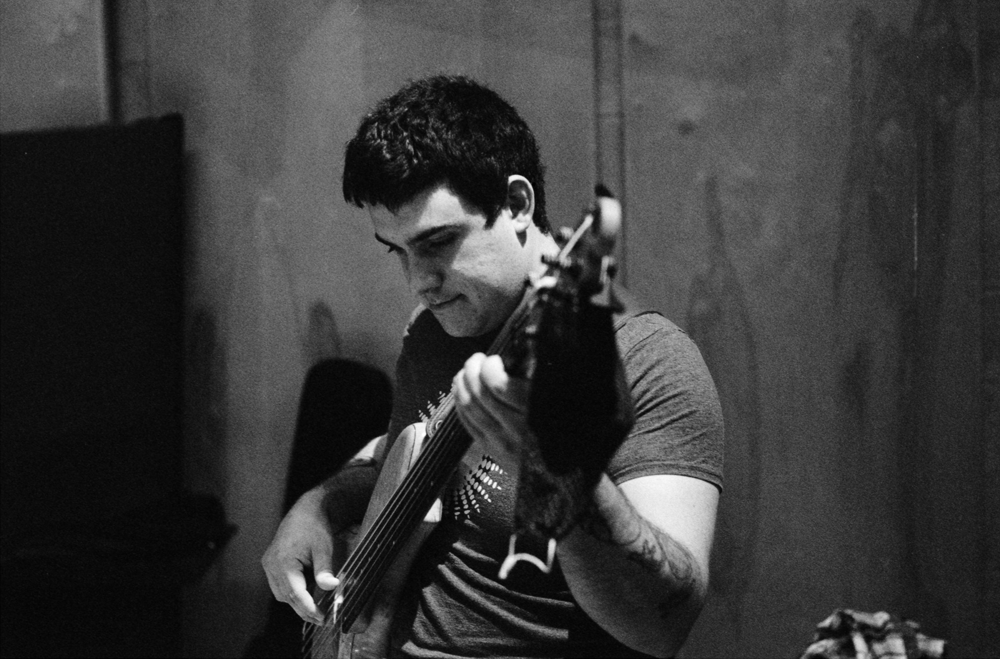

all - performance - production - composition - film/game


Cosmic Clipper
My first JUCE plugin - a very naive clipping plugin that allows independant control of the clipping algorithims for both positive and negative sections of the signal. So far, just hard clipping, tanh, and sin/cos foldback make up the algorithim options, and frankly, it sounds awful in most settings!
Progamming For Musicians Project 10
I finished Matkat Music's awesome class called Programming For Musicians in March, and thought I'd show off my work! This multimeter plugin was developed from scratch using the modern C++ framework, JUCE, and is the final project in Chuck's awesome course. I will be spicing the visuals up some day when I learn OpenGL better, but I figured I'd show off the functionality, including averaged and instant peak and RMS meters, a goniometer + correlation meter widget, and RMS and peak histograms.

Quasi-Operating System for Digitally Controlled Analog Pedal
A foolish, ongoing effort to recreate the functionality of Chase Bliss pedals via Arduino. This video shows an H11F3M optofet being controlled by a MCP4728 i2c DAC, with FET part controlling the negative feedback of 4069 CMOS Inverter IC. A simple 'for' loop to go through the DAC's range creates a proto-LFO effect. Recently I've switched to using vactrols controlled by PWM, like in the Chase Bliss pedals.
strangeness is neither learned nor earned, it is a gift from luck

for many reasons, I am very lucky, and throughout this strange journey
I have accrued many skills, passions, and curiosities in the fields of music, engineering, and the innumerable combinations thereof.
born and raised in rural Nova Scotia to music loving parents, I grew up listening to classic rock staples on the radio and turntable,
leading to me buying a guitar on my 10th birthday. within a few years, playing guitar had comsumed my life, and when junior high came around,
band class was the obvious choice over study hall. as well as picking up the trombone and bass, composition and recording quickly became part of my passion,
I quickly taught myself software like Finale and Cubase and arranged the Brinstar Depths theme from Super Metroid for the school concert band at age 14, and started recording my own songs around the same age.
after a successful tour through my high school's jazz program, winning awards for best soloist in the Atlantic Band Festival and developing my own local bands,
my music led me into a four semester stint as a jazz composition / electronic production double major at Berklee College of Music (Boston, MA) with a partial scholarship,
and after that, my heart led me into the world of analog electronics due to my love of stompboxes and synthesizers. after a semester at Dalhousie (Halifax, NS) in their engineering program,
I discovered my love for computer programming and decided to strike out on my own, taking my learning into my own hands.
as of now, I am the owner of Cosmic Monkey Sounds, where I've made a few original stompbox designs,
and am in the process of a complete make over, incorporating microcontrollers and DSP into analog circuits for true hybrid designs, such
as touch screen pedals and amps, as well as taking my first steps in developing plugins with the C++ framework JUCE.
musically, I consider myself a chameleon, having love for just about every musical genre, from Tribe Called Quest to Kendrick Lamar, Charlie Parker to Tigran Hamasyan,
Bach to Schoenberg, Whitney Houston to Carly Rae Jepsen, Ornette Coleman to John Zorn, Black Sabbath to The Dillenger Escape Plan, Cat Stevens to Bon Iver,
Kraftwerk to Venetian Snares, this list could go on and on.
whether you are in need of a sideman to play bass, drums, keyboards, or guitars in your musical projects, have an itch for
a creative composer, producer, or engineer to help realize your own music, whether that means writing for large jazz or classical ensembles,
capturing, mixing, or mastering your latest bedroom EP, or creating unique sounds and scores for your visual projects, or maybe you need a website, algorithm, or piece of hardware / software created for your distinct needs,
my diverse range of skills are yours to be utilized in timely, respectful manner.